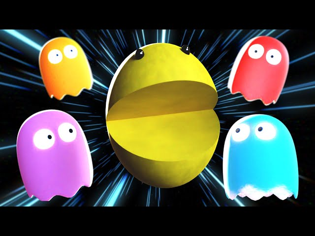

GC6RDNV 2048
I strive to create the most beautiful websites for all your needs. Working closely with you to design and develop an amazing website for your business. This game is a classic one. Getting the 2048 tile solves the mystery. Beware you may get addicted...

GC6MC8D PacMan - the ultimate experience
Not built by our team of professional developers but by myself. I ensure the most rigorous and modern websites. Built from scratch using HTML and CSS. Only the best for me and my fellow cachers. Completing level 5 and dying afterward will reveal the secret...